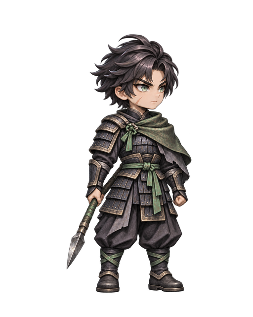
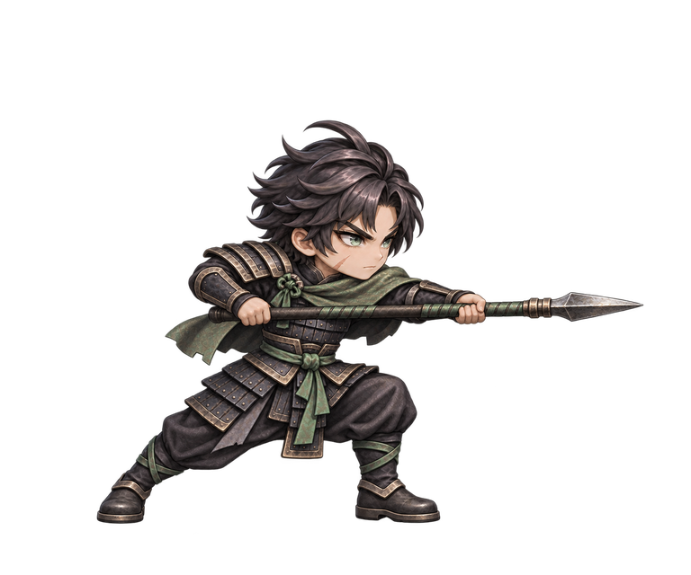
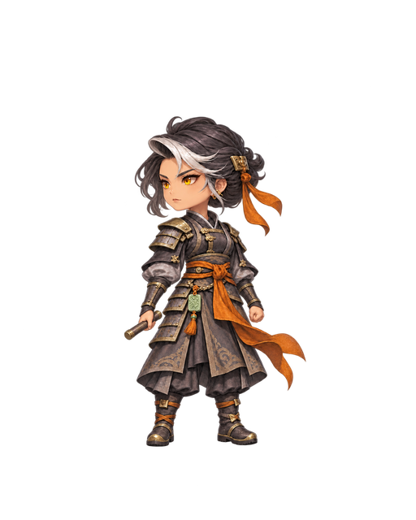

1. Nhân vật mới · NL-R04 chưa duyệt



Trinh sát · Idle, chỉ 1 hướng
Nút event là SIMULATED PREVIEW. Trong game, stage 25 đã có liên kết thực với `p2ApplyFrame(ev)`, nhưng viewer này không tự phát sinh hit hay sửa damage.
2. Quân Bộ · CL-P5 legacy
80 ô là các frame nguồn riêng trong atlas, không có skeletal rig. Đây là asset CL-P5, chưa được duyệt làm nhân vật Ngọa Long.
3. Pipeline VFX theo event (mới: PENDING)
Cổng dữ liệu sau này: real battle event → animation state + target anchor → VFX alpha tách biệt. Các ô dưới đây là nhãn kịch bản, không phải VFX đã sản xuất.
Không phát sinh turn, HP, sĩ khí hoặc phần thưởng. Hiệu ứng thiếu frame/anchor → bỏ hiển thị; không đoán dữ liệu chiến đấu.
4. Tiêu chí mở rộng
Chỉ sản xuất hàng loạt sau khi duyệt 1 nhân vật gốc hoàn chỉnh với Front/Right/Back/Left và Idle/Walk/Attack/Hit/Fall, ít nhất một VFX alpha có hình tượng rõ, cùng Chromium 1280×720 và 390px.
Hướng mỹ thuật: 2D chibi hắc ám vẽ tay, mắt sắc phát sáng năng lượng, tương phản vũ khí–giáp, pivot chân cố định; không rig, không lật gương giả hướng.